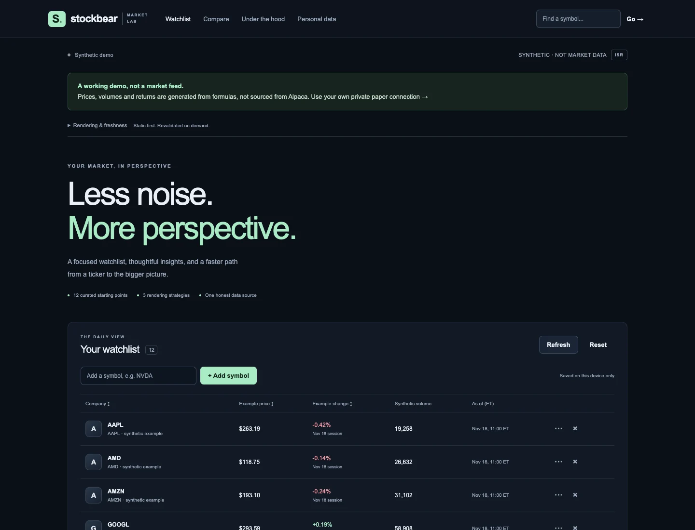
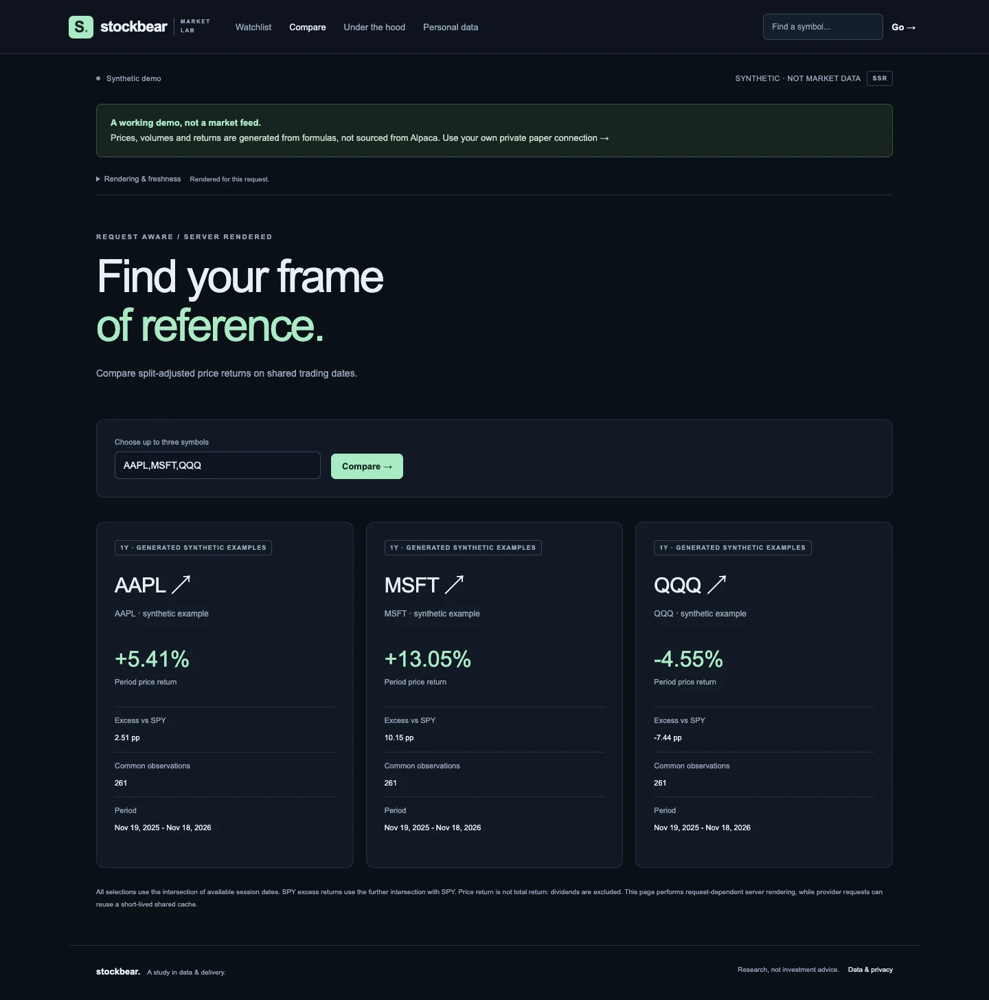

Stockbear.
- TypeScript
- Next.js
- React
- Recharts
- Zod
- Vercel
From a watchlist to a wider perspective. A research-dashboard demo for exploring symbols, comparing histories, and understanding how the page gets to you.
Synthetic demo — not market data or investment advice.
github.com/amitshankar97/stockbear · Private repository; source access requires permission. The hosted demo uses deterministic generated data, not a live financial feed.
See the research flow.
52-second walkthroughSynthetic demo — not market data or investment advice.

Find your focus.
Keep the context.
I built Stockbear to explore a familiar research task: scan a list, pick a symbol, and understand the detail without losing your place. Add or remove symbols, sort the watchlist, and open a ticker for its chart and analytics. The public-demo watchlist stays in your browser, not a brokerage account.
Explore the watchlist. Its generated examples make the interaction available without a financial-data connection.


A different horizon.
A useful benchmark.
On a ticker page, change the time range and observation resolution, then compare the series with SPY. Return, volatility, and maximum drawdown sit alongside the chart, with calculation notes and a table alternative to the visualization.
Open the AAPL example. Price return excludes dividends; benchmark comparisons use shared observation dates. The dashboard explains those choices rather than presenting a number without context.


Compare like
with like.
Choose up to three symbols for a request-driven comparison. Stockbear aligns the available dates before calculating period returns and excess return against SPY, so the comparison uses common observations.
Open this comparison. The initial result arrives as meaningful server-rendered HTML; chart and watchlist controls add interaction in the browser.
Data & delivery,
made visible.
The delivery stack is TypeScript, Next.js, React, Recharts, and Zod, deployed on Vercel. Recharts supplies the interactive visualization; Zod validates data at the application boundary.
Incremental static regeneration serves the overview and curated ticker pages. Request-dependent server rendering handles comparisons; client updates keep watchlists and charts interactive. A Performance API inspector separates measured browser timings from freshness timestamps—not a configurable rendering lab or a performance guarantee.
Read the architecture notes for rendering, caching, calculations, and privacy choices. Hosted personal connections are disabled; the separate private Alpaca integration has only been verified locally.
Explore the demo.
Know its limits.
Try the synthetic demo to explore the watchlist, charts, and comparison flow. No live market feed, investment advice, or real investment outcome is represented.
github.com/amitshankar97/stockbear remains private; source access requires permission.